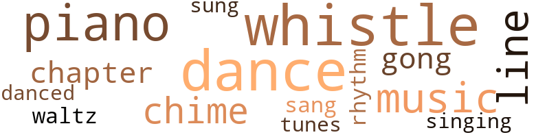
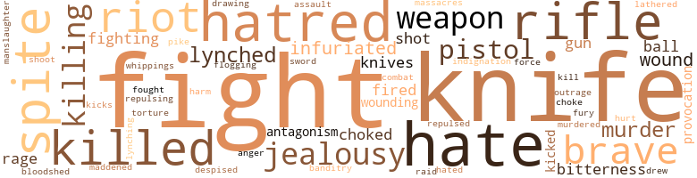
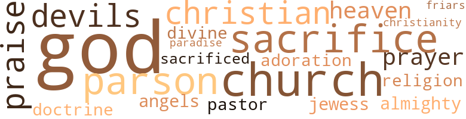

Romantic Adventures of Rosy, The Octoroon: Wth Some Account of the Persecution of the Southern Negro During the Reconstruction Period, by Coleman, Albert Evander (1929)
44 music-related terms matched in this text.
Most frequent terms in this topic: piano (6); dance (5); whistle (4); music (4); whistles (4)
chapter.n.01
Definition: a subdivision of a written work; usually numbered and titled
| word | sentence |
|---|---|
| chapter | It was a gruesome climax to the events that had centred around the charming octoroon , and she fainted in Mrs. Sykes ' arms as she realized the awful significance of the last chapter of the drama , in which love , jealousy and deadly hatred had all played their part . |
| chapter | " Here are all the elements of a sex novel - love , seduction , jealousy , hatred ; and moral and physical ruin to be dwelt on in the last chapter . " |
chime.n.01
Definition: a percussion instrument consisting of a set of tuned bells that are struck with a hammer; used as an orchestral instrument
| word | sentence |
|---|---|
| chime | Next morning the big steamboat " Hope , " a popular packet that plied from New Orleans up through the Bends to Memphis , blew her musically inflected chime of . |
| chime | At this moment the pilot blew the big chime whistles for the landing at Plaquemine , near the great St. Louis sugar plantation , and a crowd of Negroes lined the bank to watch the scene . |
| chime | " On to Memphis ! " was Mr. Sykes ultimatum , as he and his wife and Rosy walked along the hot and dusty streets of Vicksburg , and after viewing the series of wonderful fortifications erected by the Confederates to defend the city against General Grant 's Army , they returned to the Landing just in time to go on board the famous " Richmond , " much the finest packet that plied between Cincinnati and New Orleans , and whose powerful chime whistles could play a variety of tunes - and , diplomatically " Yankee Doodle " was heard on the Ohio River , while the strains of " Dixie " pleased the inhabitants along the lower Mississippi . |
dance.n.01
Definition: an artistic form of nonverbal communication
| word | sentence |
|---|---|
| dance | " My only opportunity to dance was at an occasional festival of the colored people on the plantations . |
| dances | Allow me to be your escort and we 'll take in all the shows , athletic events , soirees and student dances , and you 'll have the entree to Boston 's most select social circles . " |
| dance | She was thoroughly at home in this old plantation dance and went through it with an accuracy and abandon that charmed all who watched her . |
| dance | " The reel js my favorite dance , " she replied . |
| dances | After a pause , she soliloquized on the situation : " I do n't care to face the contemptuous attitude of the so-called ' best society ' toward me , and I 'll tell Billy so ; I 'll make any sacrifices for his sake , and will tell him to escort some other girl to the dances and lawn parties , and I 'll stay at home . " |
| dance | Billy called the next Saturday evening to escort her to a student 's dance , but she refused to go . |
| dance | Shortly after , Senty appeared as a late comer , and was studiously ignored by Billy , until the dance was over , when he went up to him , and in a loud voice , said : " Mr. Senty , I am convinced that you lied to me , when you denied having made an insulting reference to the young lady I have the honor to escort . " |
| dances | " I 'm so happy to have you here , Dear Willie ; tell me all about the Social Club 's doings , and the dances - Do you attend them ? " |
dance.v.03
Definition: skip, leap, or move up and down or sideways
| word | sentence |
|---|---|
| danced | This was loudly applauded and sung with much gusto , but soon " Yaller Jim " began to show the effects of the liquor , and his loud yells of defiance to imaginary foes , as he danced about the capstan , caused the mate to send one of the deck hands , Jack Carew by name , to warn " Yaller Jim " to behave himself . |
gong.n.01
Definition: a percussion instrument consisting of a metal plate that is struck with a softheaded drumstick
| word | sentence |
|---|---|
| gong | " Never mind , Sir ; we shall sit on the lower deck , " and the powerful gong whistle blew a loud blast , as the big boat backed out . |
| gong | Rosy 's delicate , diplomatic hint about " provocation " set her thinking and as the boat 's big gong whistles blew for the Vicksburg Landing , she rose , saying : " I must make amends to that man , Carew - he was no coward . " |
music.n.01
Definition: an artistic form of auditory communication incorporating instrumental or vocal tones in a structured and continuous manner
| word | sentence |
|---|---|
| music | Leading her to a seat during a pause in the music , Billy congratulated her on her success as a dancer , and she apologized for her awkwardness . |
| music | " Well , Jane , I 'll send Rosy away to the Seminary next week , and she has promised me to study hard and become proficient on the piano , for I do so like music at home and I 've forgotten every piece I learned as a girl . " |
| music | " Why , you look half perished , Mr. Lachet ; come over here to the radiator and warm up , and Rosy go to the piano and play that pretty little piece of music you learned at the Seminary . |
| music | Charley , however , was enthusiastic in praise of her playing , as was Billy , who stood close to her at the piano and turned the sheets of music at her nod . |
piano.n.01
Definition: a keyboard instrument that is played by depressing keys that cause hammers to strike tuned strings and produce sounds
| word | sentence |
|---|---|
| piano | " Well , Jane , I 'll send Rosy away to the Seminary next week , and she has promised me to study hard and become proficient on the piano , for I do so like music at home and I 've forgotten every piece I learned as a girl . " |
| piano | " Yes , I know how you feel ; now I tried to be friendly with her ; accompanied her on the piano when she sang ; invited her to my room to have a chat , but she coldly repelled all advances . |
| piano | " Why , you look half perished , Mr. Lachet ; come over here to the radiator and warm up , and Rosy go to the piano and play that pretty little piece of music you learned at the Seminary . |
| piano | Charley , however , was enthusiastic in praise of her playing , as was Billy , who stood close to her at the piano and turned the sheets of music at her nod . |
| piano | Rosy flushed a fiery red , as she rose from the piano stool and proffered her hand , which was grasped with impetuosity by her colored admirer . |
| piano | At this moment Rosy came bounding in from her long walk ; the glow of health on her cheeks ; her eyes sparkling with the exuberance of living ; her splendid teeth showing , as with a faint smile she grasped Mr. Miller 's outstretched hand , and then throwing off her heavy fur dolman , she purposely went and sat on the piano stool , as much as to say to her infatuated lover . |
rhythm.n.04
Definition: the arrangement of spoken words alternating stressed and unstressed elements
| word | sentence |
|---|---|
| rhythm | The sun was setting , and the persistent rhythm of the steamboat 's engines coupled with the monotonous scenery viewed along the winding river ; the ever fading perspective behind and the opening up of new views ahead , all promoted that peaceful frame of mind leading up to the romantic aspect of things , and just then the colored roustabouts , gathered at the bow , as the foaming waves dashed by , with that peculiar murmur so soothing to a river man 's ears , began the singing of their popular little stanzas , leading off with a newly coined verse as follows : " When you hears de whistle of de ' Lee ' , " Come alone ! |
sing.v.02
Definition: produce tones with the voice
| word | sentence |
|---|---|
| sang | " Yes , I know how you feel ; now I tried to be friendly with her ; accompanied her on the piano when she sang ; invited her to my room to have a chat , but she coldly repelled all advances . |
| sung | This was loudly applauded and sung with much gusto , but soon " Yaller Jim " began to show the effects of the liquor , and his loud yells of defiance to imaginary foes , as he danced about the capstan , caused the mate to send one of the deck hands , Jack Carew by name , to warn " Yaller Jim " to behave himself . |
singing.n.01
Definition: the act of singing vocal music
| word | sentence |
|---|---|
| singing | The sun was setting , and the persistent rhythm of the steamboat 's engines coupled with the monotonous scenery viewed along the winding river ; the ever fading perspective behind and the opening up of new views ahead , all promoted that peaceful frame of mind leading up to the romantic aspect of things , and just then the colored roustabouts , gathered at the bow , as the foaming waves dashed by , with that peculiar murmur so soothing to a river man 's ears , began the singing of their popular little stanzas , leading off with a newly coined verse as follows : " When you hears de whistle of de ' Lee ' , " Come alone ! |
tune.n.01
Definition: a succession of notes forming a distinctive sequence
| word | sentence |
|---|---|
| line | The warning came just in time , for as Carew dodged back , " Yaller 's " big , shining blade slashed his shirt from shoulder to waist line , a blow intended for his heart , but before " Yaller " could draw back for another plunge of the knife , the mate had caught his arm . |
| line | The " Thompson " was heavily laden and the Captain looked anxiously ahead , as the big boat in the gloom of a dark night approached the justly dreaded Destruction Bar with its shifting mud bottom , just nine miles below Natchez , and he slowed the speed down to one bell , while a deck hand with a coil of line on his arm and the sounding lead in hand sprang nimbly to the bow and began taking soundings . |
| tunes | " On to Memphis ! " was Mr. Sykes ultimatum , as he and his wife and Rosy walked along the hot and dusty streets of Vicksburg , and after viewing the series of wonderful fortifications erected by the Confederates to defend the city against General Grant 's Army , they returned to the Landing just in time to go on board the famous " Richmond , " much the finest packet that plied between Cincinnati and New Orleans , and whose powerful chime whistles could play a variety of tunes - and , diplomatically " Yankee Doodle " was heard on the Ohio River , while the strains of " Dixie " pleased the inhabitants along the lower Mississippi . |
| lines | When he left her , uncertain what to do or where to go , he wandered along the wharf at Galveston until he came to a small steamship - a British blockade runner , hurriedly loading cotton for the desperate chance of escaping the close drawn lines of the United States Navy . |
| lines | " Mr. Smith eagerly accepted the offer and when the vessel was letting go her lines he got on board unobserved , and was carried safely through the blockading fleet to Kingston , Jamaica , where he soon got work and boarding at my parents ' home , he fell in love with me and regardless of family objections we were married and at the does of the war , he , no longer branded as an escaped slave - but now a free man , insisted on returning to his native land . |
waltz.n.03
Definition: a ballroom dance in triple time with a strong accent on the first beat
| word | sentence |
|---|---|
| waltz | With half concealed agitation she accepted Billy 's invitation to waltz with him and she did fairly well . |
whistle.n.01
Definition: the sound made by something moving rapidly or by steam coming out of a small aperture
| word | sentence |
|---|---|
| whistles | whistles as she rounded to at the wharf boat , and Mrs. Sykes and husband boarded her with many other passengers . |
| whistles | At this moment the pilot blew the big chime whistles for the landing at Plaquemine , near the great St. Louis sugar plantation , and a crowd of Negroes lined the bank to watch the scene . |
| whistles | Rosy 's delicate , diplomatic hint about " provocation " set her thinking and as the boat 's big gong whistles blew for the Vicksburg Landing , she rose , saying : " I must make amends to that man , Carew - he was no coward . " |
| whistles | " On to Memphis ! " was Mr. Sykes ultimatum , as he and his wife and Rosy walked along the hot and dusty streets of Vicksburg , and after viewing the series of wonderful fortifications erected by the Confederates to defend the city against General Grant 's Army , they returned to the Landing just in time to go on board the famous " Richmond , " much the finest packet that plied between Cincinnati and New Orleans , and whose powerful chime whistles could play a variety of tunes - and , diplomatically " Yankee Doodle " was heard on the Ohio River , while the strains of " Dixie " pleased the inhabitants along the lower Mississippi . |
whistle.v.01
Definition: make whistling sounds
| word | sentence |
|---|---|
| whistle | Promise me hereafter to treat 'em ' right , whether black or white , " and warmly shaking her hand , he hurried back to the boat as the whistle blew to start . |
| whistle | " Never mind , Sir ; we shall sit on the lower deck , " and the powerful gong whistle blew a loud blast , as the big boat backed out . |
| whistle | Soon the boat 's whistle was blown for Flaquemine Landing , and Rasser descended the stairs , glum and silent , yet carrying himself with a certain sort of swagger that was highly amusing - even to his friends . |
| whistle | The sun was setting , and the persistent rhythm of the steamboat 's engines coupled with the monotonous scenery viewed along the winding river ; the ever fading perspective behind and the opening up of new views ahead , all promoted that peaceful frame of mind leading up to the romantic aspect of things , and just then the colored roustabouts , gathered at the bow , as the foaming waves dashed by , with that peculiar murmur so soothing to a river man 's ears , began the singing of their popular little stanzas , leading off with a newly coined verse as follows : " When you hears de whistle of de ' Lee ' , " Come alone ! |
159 violence-related terms matched in this text.
Most frequent terms in this topic: fight (15); knife (13); hate (9); hatred (7); killed (6)
aggravation.n.02
Definition: unfriendly behavior that causes anger or resentment
| word | sentence |
|---|---|
| provocation | " They 're no different from white men , " replied Mr. Sykes , " under provocation they act just the same . " |
| provocation | " I 'd do just the same over again , " replied Carew , sullenly , if I got the provocation . " |
anger.n.01
Definition: a strong emotion; a feeling that is oriented toward some real or supposed grievance
| word | sentence |
|---|---|
| anger | " I defy you to loosen him , " she shrieked , her face red with anger as she leaned over the rail , pointing her hand at Carew , while Ebbie vainly tugged at her dress with both hands . |
banditry.n.01
Definition: the practice of plundering in gangs
| word | sentence |
|---|---|
| banditry | Then again banditry flourished . |
bloodshed.n.01
Definition: the shedding of blood resulting in murder
| word | sentence |
|---|---|
| bloodshed | But the flames of rage and bitterness burst forth at times , and naturally resulted in riots and bloodshed , and shocking forms of revenge were resorted to , as black men were summarily lynched without trial or hearing . |
contemn.v.01
Definition: look down on with disdain
| word | sentence |
|---|---|
| despised | " These Southern white girls are very proud , I know , of their ancestry , " replied Rosy , " and having been brought up in luxurious and refined surroundings , naturally look down on the despised race , which made it possible , by reason of its toil and servitude , for them to lead a life of ease and indolence . " |
draw.v.23
Definition: pull (a person) apart with four horses tied to his extremities, so as to execute him
| word | sentence |
|---|---|
| drawing | " Oh ! " exclaimed he , drawing up a camp stool and sitting in front , of her . |
| drew | and at a gallop , his horses , all lathered with perspiration drew up in front of the stately Sykes mansion in Beacon Street with a great clatter . |
fight.n.02
Definition: the act of fighting; any contest or struggle
| word | sentence |
|---|---|
| combat | Mr. Miller followed them ashore and expressed his feeling of sorrow that such a dreadful combat should have occurred : " However I can not express myself forcibly enough in praise of your courageous stand for my persecuted race , " said he . |
fight.n.05
Definition: a boxing or wrestling match
| word | sentence |
|---|---|
| fight | He 's much heavier than I am , and in the fight that ensued , he gave me this black eye and mauled me around , tearing the coat off my back ! " |
| fight | Maddened beyond control Dick grappled with his adversary , and a regular ' rough and tumble ' fight ensued , both men pummelling each other to the best of their ability , and finally down they went in a tight clinch and rolled over and over in the mud . |
| fight | Groups of friends surrounded the panting fighters , and while Rosy bathed Billy 's inflamed eye with her wet handkerchief and brushed off his clothes , Dick 's friends wiped his bloody nose , and quietly advised him to quit , as he 'd been guilty of foul play , apparent to all who had watched the fight . |
| fight | " Billy got in a fight over me , " she excitedly replied : " A young man had referred to me as a ' nigger wench , ' so I was told , and Billy hit him on the nose and that 's where the blood come from . " |
| fight | I would have married you the day after you so kindly and bravely interfered in the fight with Senty , but for one reason . " |
| fight | Ebbie sha 'n' t fight you , " exclaimed Mrs. Sykes , " he 's too dear and precious to me , " and she embraced him . |
| fight | Fm on the level every time ; with every man , and you know perfectly well it was death for that coon or me in the fight . " |
| fight | " Then , lady , you 're equally guilty , for you instigated the final fight . " |
| fight | My husband 's throat was cut from ear to ear in a desperate fight with two assailants , and he fell a martyr to the cause . " |
| fight | He encouraged me greatly in my legislative fight for fair play for the colored citizens of Georgia , and also aided me in putting the Atlanta University on a firm foundation . |
fight.v.02
Definition: fight against or resist strongly
| word | sentence |
|---|---|
| fight | " Tom , you 're a light weight , while I 'm about Dick 's weight and inches , and now being satisfied that he did utter the offensive expression first , I shall give him the lie when I meet him and afford him a chance to fight if he dare . " |
| fight | " Let 'em fight on , " cried several others . |
| fighting | " Because , " and Rosy hesitated - " because I interfered when the man he was fighting with tried to put out his eye . " |
| fight | " May be it is , but I had to come to Boston ; I had to raise the money to do it , and here I am Rosy , without hope , without courage to fight life 's battle , if you cast me aside . " |
| fought | " We fought hard for our homes and our institutions : we are now a conquered people , and must submit , but let me tell you , " said Mr. Rimway , in a bitter tone , " we hate you Northerners ! " |
| fight | " I now challenge your husband to fight a duel at the next landing - with pistols at twenty paces . |
| fight | Said I , ' we have three hundred thousand black men with white hearts ; also , one hundred thousand good and true union white men , who will fight for and beside the black race , against the three hundred thousand hell-bound rebels . |
| fighting | Rasser turned pale , advanced a step - then hesitated , for Miller in fighting attitude , with clenched fists , presented a very aggressive appearance , and Rasser finally slunk away to the gang plank and went ashore amid the jeers of the white passengers . |
flog.v.01
Definition: beat severely with a whip or rod
| word | sentence |
|---|---|
| lathered | and at a gallop , his horses , all lathered with perspiration drew up in front of the stately Sykes mansion in Beacon Street with a great clatter . |
fury.n.01
Definition: a feeling of intense anger
| word | sentence |
|---|---|
| rage | But the flames of rage and bitterness burst forth at times , and naturally resulted in riots and bloodshed , and shocking forms of revenge were resorted to , as black men were summarily lynched without trial or hearing . |
| rage | " I never took a defi yet and wo n't now from a dirty abolitionist , " shouted Carew , now boiling with rage , as he glared up at her . |
| fury | At East Boston was moored a large cat boat in which he frequently fearlessly ventured out on stormy days , and his proud boast was that be was the only Harvard student who had ever sailed a boat single handed and had rounded Boston Light amid the fury of wind and sea . |
gag.v.06
Definition: cause to retch or choke
| word | sentence |
|---|---|
| choked | " Let 's do something for her , " replied Mr. Sykes in a choked up voice , pulling out some bills . |
| choked | Dinah , with voice choked with emotion as she wept , suddenly knelt down and said : " Oh , Lord ! |
| choke | Paying his passage to Cincinnati at the purser 's office , he ascended to the upper deck and calling out in a defiant tone of voice , as the boat backed out : " To h - with you rebels who are trying to choke freedom out of the negroes . " |
gun.n.01
Definition: a weapon that discharges a missile at high velocity (especially from a metal tube or barrel)
| word | sentence |
|---|---|
| gun | Capt. Baker going ashore again , asked Capt. Gates where his gun was ? |
| gun | " Put up that pop gun , young feller ! " ordered Eph , in a high pitched , strained voice that thrilled all who heard it , " or - " Billy sullenly obeyed , and he and his comrades started back to the boat . |
hate.n.01
Definition: the emotion of intense dislike; a feeling of dislike so strong that it demands action
| word | sentence |
|---|---|
| hatred | It was a gruesome climax to the events that had centred around the charming octoroon , and she fainted in Mrs. Sykes ' arms as she realized the awful significance of the last chapter of the drama , in which love , jealousy and deadly hatred had all played their part . |
| hatred | The cruel treatment to which they were subjected by their former inhuman owners , naturally bred a terrible hatred , largely repressed as the Negroes had to seek and accept employment from their former masters . |
| hatred | In some sections the hatred was so intense that school-houses for colored children were burned and their camp meetings were mobbed . |
| hatred | We ca n't get work oft our own plantation ; wages are small ; food dear , and hatred for us almost universal . " |
| hate | " We have already done so , and what is the result - the rousing of bitterer hate against us , and severer persecution . " |
| hatred | We protest most emphatically against being made the slaves so to speak , of these prisoners of war , who hate us with unutterable hatred , we therefore petition Congress for protection . ' " |
| hatred | The word " rebel " fairly electrified the throngs of passengers , and mingled glances of hatred and contempt were turned upon the Sykes . |
| hate | In his trim little cottage , with honeysuckle vines clambering over the front porch , Mrs. Sykes heard a sad tale of how the forces of hate had embittered his declining years ; and now under a pitiless boycott he had about decided to retire from business , and give his grown up son , Charles , the sole control . |
| hatred | " You 're a martyr , " exclaimed Mrs. Sykes , after listening to his sad story , " and I am sorry to know of such un-Chris-tian hatred manifested toward an upright man . " |
hate.v.01
Definition: dislike intensely; feel antipathy or aversion towards
| word | sentence |
|---|---|
| hate | " Really , Miss Rimway , I hate to ask , but are you not a girl of color ? " |
| hate | Billy tossed the letter on the table , remarking : " I 'd hate to go over ; I 'd have thought she had forgotten me by this time . " |
| hate | Her voice trembled a little , as she replied : " I hate to cause you such suffering , Mr. Miller , but my word is pledged to another . " |
| hate | " We fought hard for our homes and our institutions : we are now a conquered people , and must submit , but let me tell you , " said Mr. Rimway , in a bitter tone , " we hate you Northerners ! " |
| hate | " Ruth , while I hate to leave this cool seat on the shady side of the boat , yet if ' duty calls ' us down under the hot southern sun , I 'm ready , " and together they descended the broad staircase . |
| hate | We protest most emphatically against being made the slaves so to speak , of these prisoners of war , who hate us with unutterable hatred , we therefore petition Congress for protection . ' " |
| hate | " There is another point I want to make clear , " said Mr. Brown , the Southern negroes hate to see these Northern men we term ' carpet baggers ' come down here like a swarm of locusts and sieze all the fat offices ! " |
| hated | Everybody meets everybody else on those boats , but as abolitionists we had no white friends and Ruth 's avowed friendship for the negroes caused us to be universally shunned and hated . |
hostility.n.02
Definition: a state of deep-seated ill-will
| word | sentence |
|---|---|
| antagonism | " Ebbie , listen ; Northern copperheads and Southern howlers are to blame for this hateful antagonism to the negro race . " |
| antagonism | " We 'll have to go North very soon , Ruth , or this ' hateful antagonism ' will be directed against us . " |
indignation.n.01
Definition: a feeling of righteous anger
| word | sentence |
|---|---|
| indignation | Mrs. Sykes ' face flushed with indignation as she overheard such irritating views , and she fidgetted uneasily in her seat . |
| outrage | Then she heard the prisoner 's story , and when he added : " I 'm tortured here , " she denounced his treatment as an outrage . |
infuriate.v.01
Definition: make furious
| word | sentence |
|---|---|
| infuriated | The loud report fairly stunned the twenty-four negroes ; some fell on their knees to beg for mercy ; others started on a staggering run for the " Hope , " while a couple of bolder spirits , infuriated with liquor , drew bowie knives and made a dash for Eph . |
| infuriated | The white mob was so infuriated that wounded colored men escaping by the rear exit were stabbed in the yard , and their heads beaten in with brick bats ! |
| infuriated | the fellow has a knife , " warned the mate , as Carew sprang upon the infuriated man . |
injury.n.01
Definition: any physical damage to the body caused by violence or accident or fracture etc.
| word | sentence |
|---|---|
| harm | Only harm could come of such an acquaintance . " |
jealousy.n.01
Definition: a feeling of jealous envy (especially of a rival)
| word | sentence |
|---|---|
| jealousy | Billy showed a certain uneasiness in his manner ; he could not but note Miller 's devoted attention to Rosy , and for the first time in his life the demon of jealousy entered his soul . |
| jealousy | It was a gruesome climax to the events that had centred around the charming octoroon , and she fainted in Mrs. Sykes ' arms as she realized the awful significance of the last chapter of the drama , in which love , jealousy and deadly hatred had all played their part . |
| jealousy | " Here are all the elements of a sex novel - love , seduction , jealousy , hatred ; and moral and physical ruin to be dwelt on in the last chapter . " |
| jealousy | " Is not Rosy , the pretty octoroon , your daughter , and were not she and her mother thrown out of your house , without cause - except the jealousy of your own white wife . " |
kick_back.v.02
Definition: spring back, as from a forceful thrust
| word | sentence |
|---|---|
| kicked | " Yes ; he wuz my boss and hit and kicked me , 'cause he said I wuz lazy . " |
| kicked | Just then , the cook ( the only colored man in the crew ) , came out and said : " That 's the way we 's bein ' treated now , lady ; kicked , cuffed and insulted : free only in name . |
| kicks | Finally , unable longer to endure the cuffs and kicks of his cruel master , one evening he slipped aboard a steamboat bound for Galveston , hiding among the bales of cotton . |
kill.v.10
Definition: cause the death of, without intention
| word | sentence |
|---|---|
| killing | As I was told in New Orleans , " It would be just as easy to get a jury in the state of New York to convict a person of manslaughter for shooting a mad dog , as to get a jury of exrebels to find a white man guilty upon a charge of killing a negro ! " |
| killing | They formed a Loyal League to oppose the whites - the dregs of the rebellion and in the town of Franklin , they attacked the blacks , resulting in the wounding of eighteen colored men , who made a brave resistance , killing one white man and wounding of eight others . |
| killed | Most likely he killed hisself , and lef ' me alone with my little girl here - so pretty , so kind and true - and now the final word from Missus Rimway is , ' Git off the place at once ! ' " |
| kill | " Did you kill him ? " |
| killed | Suddenly the city police began firing through the windows and the men within returned the fire , many being killed and wounded on both sides . |
| killed | Forty-two police and several white citizens were killed and wounded , and twenty-seven colored men were killed . |
| killed | Forty-two police and several white citizens were killed and wounded , and twenty-seven colored men were killed . |
| killed | " That drunken brute did n't deserve any ; it was my life or his , and though I 'm sorry I killed him , yet I had to . " |
| killed | Weeping and moaning , Mrs. Smith added that fifty were killed and wounded in the riot , and she was warned to leave by the Ku Klux , who sent her a letter bearing the picture of skull and cross bones . |
| killing | As a hunter he had an enviable record , from killing bears in Maine to shooting ducks in the sea side marshes of his native state , while as a fisherman he had not only angled for trout in the mountain streams , but had boldly made trips off the coast for cod and sword fish ; while in friendly boxing bouts , with his quick initiative , keen of eye , with muscles like iron , he generally came out the winner . |
killing.n.02
Definition: the act of terminating a life
| word | sentence |
|---|---|
| killing | " And God knows who caused the killing , " retorted Carew as he climbed the stairs to the texas to report to the captain Shortly afterward the purser approached the Sykeses with some bank bills in his hand . |
knife.n.02
Definition: a weapon with a handle and blade with a sharp point
| word | sentence |
|---|---|
| knife | Paddy , brave as he claimed to be , was startled and the glint of metal in the hands of the stowaway , which might mean knife or revolver , added to his excitement . |
| knife | " Burned up , " replied he ; " but I 've got my good bowie knife , all ' rity ' " , he replied , feeling for his sheath and belt . |
| knives | The loud report fairly stunned the twenty-four negroes ; some fell on their knees to beg for mercy ; others started on a staggering run for the " Hope , " while a couple of bolder spirits , infuriated with liquor , drew bowie knives and made a dash for Eph . |
| knives | soon had the others corralled , and was searching them for knives , while humane passengers worked over the two wounded men . |
| knife | " Later the citizens in favor of universal suffrage in a petition to Congress , said : " We protest against being left to the tender mercies of assassins who use knife and pistol . |
| knife | The Negro instinctively backed away as the mate advanced , and in an instant the firemen jumped at him and bore him to the deck , and as they did so , a glittering bowie knife slipped out of his hip pocket . |
| knife | Both the mate and Carew , incensed beyond control advanced on him , but with due caution for " Yaller " had not only his cotton hook , an extremely dangerous weapon in the hands of a desperate man , but like many others secretly carried a bowie knife in a leathern sheath , sewed inside the waistband of his trousers . |
| knife | the fellow has a knife , " warned the mate , as Carew sprang upon the infuriated man . |
| knife | The warning came just in time , for as Carew dodged back , " Yaller 's " big , shining blade slashed his shirt from shoulder to waist line , a blow intended for his heart , but before " Yaller " could draw back for another plunge of the knife , the mate had caught his arm . |
| knife | Then the jingle bell was heard in the engine room as the steamer speeded up again to pass Bowie Point , where was the plantation of the famous old colonel who experimented in a black-smith shop until he had perfected the deadly knife bearing his name , and passing Natchez Island Bar , the steamboat was soon opposite Vidalia , La. and rounded into the spacious wharf boat moored under the towering hillside of Natchez . |
| knife | Carew 's answer came like a flash of lightning : drawing his knife he sprang at " Yaller " and cut the cords that bound him to the post . |
| knife | For a second " Yaller " staggered in his freedom , and then suddenly drew a bright , keen edged knife from its concealed sheath , and made a desperate lunge at Carew . |
| knife | The knife pierced his arm , and as " Yaller " withdrew it , with the red blood spurting from the wound , Carew instantly plunged his own huge weapon into " Yaller 's " breast , and as a bloody stream issued from the deadly cut , " Yaller " stumbled against the boat 's low rail , swayed a minute , and then toppled over into the river - was swept under the great whirling paddle wheel , and was seen no morel The shocking tragedy numbed the senses of all on board for a moment , followed by a wild scene of excitement . |
| knife | Deathly pale , with trembling fingers he wiped his bloody knife with a piece of paper and went to his cabin to bind up his wound . |
| knife | " Yes , Massa Carew , that nigger flashed de knife to get you , and I 'd a hit back just de same , for every man 's life is sweeter than peaches to him , but - and every culled pusson and many white people aboard say : ' Carew should n't a cut him loose , even if dat Northern woman did nag him . ' " |
lynch.v.01
Definition: kill without legal sanction
| word | sentence |
|---|---|
| lynched | But the flames of rage and bitterness burst forth at times , and naturally resulted in riots and bloodshed , and shocking forms of revenge were resorted to , as black men were summarily lynched without trial or hearing . |
| lynched | " Yes , not only are we discriminated against , but many of us live in mortal terror of the Ku Klux Klan , that persecutes us because we are black , and here lately lynched a colored man of my congregation , without giving him a chance to prove his innocence . |
| lynched | " Yes , " he continued , " I own one of the largest barber shops in the great city of Cincinnati , and am returning from Tus-cumbia , Alabama , where my dear brother was lynched a few weeks ago in the most heartless , fiendish fashion . " |
lynching.n.01
Definition: putting a person to death by mob action without due process of law
| word | sentence |
|---|---|
| lynching | I feared lynching at their hands . |
madden.v.03
Definition: make mad
| word | sentence |
|---|---|
| Maddened | Maddened beyond control Dick grappled with his adversary , and a regular ' rough and tumble ' fight ensued , both men pummelling each other to the best of their ability , and finally down they went in a tight clinch and rolled over and over in the mud . |
malice.n.01
Definition: feeling a need to see others suffer
| word | sentence |
|---|---|
| spite | " Let me alone ! " said she ( and in an aside ) , " this is that villain , Rimway ! " and in spite of her husband 's tug at her dress , she turned boldly around , saying : " Excuse me , gentlemen , as a woman from Boston , I must disagree with your views . |
| spite | " Our Lord has spoken through the might of our Northern armies , and liberated the negroes in spite of you . " |
| spite | " You 're a bad nigger , " exclaimed the mate , as he grabbed the fellow by the arm , and in spite of his Struggles hurried him to a post , where two brawny roustabouts passed a chain around his chest and under his arms , then around the post , and securely padlocked it . |
| spite | Mrs. Sykes was roused , and in spite of her husband 's protest , went down to see what was the matter . |
| spite | Carew at the same moment cleverly tripped him and down he went to the deck , and in spite of his struggles he was soon pinioned and tied up to a stanchion amid the angry glances of the other roustabouts . |
| spite | Finally after he had seated himself on the shady side of the deck , she could not restrain her impatience , and in spite of her husband 's request to " sit still " she rose and accosted the stranger . |
manslaughter.n.01
Definition: homicide without malice aforethought
| word | sentence |
|---|---|
| manslaughter | As I was told in New Orleans , " It would be just as easy to get a jury in the state of New York to convict a person of manslaughter for shooting a mad dog , as to get a jury of exrebels to find a white man guilty upon a charge of killing a negro ! " |
murder.n.01
Definition: unlawful premeditated killing of a human being by a human being
| word | sentence |
|---|---|
| murder | Hundreds of cases proved it , including the acquittal of the notorious Perrin for the murder of Henry Thomas . |
| murder | " Not so easy , with them blacks ' loaded ' with the whiskey and ready for murder , and - " " And , " interrupted Capt. Baker , " with half a dozen of my crew threatening to shoot if they are not let get at the liquor too ! " |
| murder | At this moment Mrs. Sykes and husband happened to pass by and she paused and glancing at Carew , said solemnly : " On your head rests the crime of murder ! " |
murder.v.01
Definition: kill intentionally and with premeditation
| word | sentence |
|---|---|
| murdered | " Now , Mr. Bradley , on the lower deck is an unfortunate colored woman , highly educated , whose husband was recently murdered in Texas , and she is travelling North to escape the Ku Klux . |
musket_ball.n.01
Definition: a solid projectile that is shot by a musket
| word | sentence |
|---|---|
| ball | The next Saturday evening , Billy escorted her to a ball at which the elite of Boston society was present . |
| ball | " Rosy , you 're the belle of the ball , " said Billy . |
open_fire.v.01
Definition: start firing a weapon
| word | sentence |
|---|---|
| fired | Miller soon appeared with valise in hand and jauntily running up the steps of the high stoop , rang the bell at the door of the Sykes mansion , as Lachet , standing beneath in the area , and hidden from his sight by the heavy stone parapet , jumped out and with true aim fired at his rival , the bullet ranging upward through his body . |
| fired | The colored men defied them , and marching in a body to the Market Square , they were fired on . |
pain.v.02
Definition: cause emotional anguish or make miserable
| word | sentence |
|---|---|
| hurt | " Do n't worry , mother , " replied Billy , " I would n't hurt her feelings for the world , and if Auntie Ruth consents , I 'll show her the town and take her buggy riding and boat sailing . " |
pike.n.04
Definition: medieval weapon consisting of a spearhead attached to a long pole or pikestaff; superseded by the bayonet
| word | sentence |
|---|---|
| pike | It was that of a big gar pike , a fish which grows to enormous size in the muddy depths of the lower Mississippi , and is justly dreaded by bathers . |
pistol.n.01
Definition: a firearm that is held and fired with one hand
| word | sentence |
|---|---|
| pistols | " I now challenge your husband to fight a duel at the next landing - with pistols at twenty paces . |
| pistol | Running back to the steamer , with a fierce oath , he shouted : " The first man that lays a hand on the yawl 's tackle to lower it and go after whiskey will be shot dead ! " and he waved a big pistol over his head . |
| pistol | " This is mutiny ! " fairly shrieked the Captain , drawing his pistol , as he advanced to head them off . |
| pistol | " Later the citizens in favor of universal suffrage in a petition to Congress , said : " We protest against being left to the tender mercies of assassins who use knife and pistol . |
raid.v.01
Definition: search without warning, make a sudden surprise attack on
| word | sentence |
|---|---|
| raid | " Why , " said he , " many negroes hunt game by day and raid the plantations for chickens at night . " |
rape.n.03
Definition: the crime of forcing a woman to submit to sexual intercourse against her will
| word | sentence |
|---|---|
| assault | Greenville had been known as a very hotbed of rebels , and as the steamer let down her gang plank , a well dressed , handsome mulatto rushed on board , evidently in dread of assault from a crowd of white men on the wharf boat . |
repel.v.03
Definition: force or drive back
| word | sentence |
|---|---|
| repulsed | In much the same studiously cold tone of voice as when she repulsed the bumptious Rasser on the steamboat , the summer before , she went on to say : " Mr. Lachet , your unexpected appearance gives me an op - portunity to tell you that I respect you and your parents as casual acquaintances , all animated with the same hopes and aspirations for the uplifting of my race - " " Mine too , " he burst forth ; " my mother is a quadroon , and I 'm - I 'm like you , got a touch of color . " |
| repulsing | " I 'm proud of you , " said Mrs. Sykes , gazing affectionately at her , " for repulsing his attentions . |
resentment.n.01
Definition: a feeling of deep and bitter anger and ill-will
| word | sentence |
|---|---|
| bitterness | But the flames of rage and bitterness burst forth at times , and naturally resulted in riots and bloodshed , and shocking forms of revenge were resorted to , as black men were summarily lynched without trial or hearing . |
| bitterness | " I 'm sorry you manifest such racial bitterness , " remarked Mrs. Sykes . |
rifle.n.01
Definition: a shoulder firearm with a long barrel and a rifled bore
| word | sentence |
|---|---|
| rifle | smiled as he fingered his long double barrelled rifle : " Leave it to me , gents . |
| rifle | I 'm the Deputy Sheriff of Tensas Parish , " shouted Eph , holding his rifle in the hollow of his left arm . |
| rifles | and his companion cocking their rifles slowly walked back into the thicket , separating quite a little distance apart as they did so . |
| rifle | " Hold up your hands , you rousters ! " yelled Eph , as he let fly with his rifle over their heads . |
| rifle | It was a close call , for he was n't one hundred feet away , but luckily his companion had drawn a bead on them , and the rousters fell in their tracks , at the report of the rifle . |
| rifles | " Well , the negroes are trying to take the law in their own hands ; they have formed military organizations , their scanty wages being spent for rifles and revolvers . |
riot.n.01
Definition: a public act of violence by an unruly mob
| word | sentence |
|---|---|
| riots | But the flames of rage and bitterness burst forth at times , and naturally resulted in riots and bloodshed , and shocking forms of revenge were resorted to , as black men were summarily lynched without trial or hearing . |
| riot | " It was on July 30 , 1866 , that the bloody riot occurred at the Mechanics ' Institute in New Orleans . |
| riot | " I have no doubt you do , for as a political firebrand , you incited that terrible riot down in New Orleans . " |
| riot | A terrible and bloody riot ensued . |
| riot | Weeping and moaning , Mrs. Smith added that fifty were killed and wounded in the riot , and she was warned to leave by the Ku Klux , who sent her a letter bearing the picture of skull and cross bones . |
shoot.v.02
Definition: kill by firing a missile
| word | sentence |
|---|---|
| shoot | Leaning out from raised windows on the second floor , both Mrs. Sykes and Rosy screamed with fright as they saw Lachet raise the still smoking revolver and shoot himself through his open mouth . |
| shot | The majority were hung , but some v/ere burned , and others shot to death . |
| shot | I had addressed a meeting of colored men a short time before , and ran the risk of being shot to do it . |
slaughter.n.03
Definition: the savage and excessive killing of many people
| word | sentence |
|---|---|
| massacres | My reply was that the North must take care that the Southern Blacks were not left to the mercy of that diabolic spirit that manifested itself in the massacres at Memphis and New Orleans . |
sword.n.01
Definition: a cutting or thrusting weapon that has a long metal blade and a hilt with a hand guard
| word | sentence |
|---|---|
| sword | As a hunter he had an enviable record , from killing bears in Maine to shooting ducks in the sea side marshes of his native state , while as a fisherman he had not only angled for trout in the mountain streams , but had boldly made trips off the coast for cod and sword fish ; while in friendly boxing bouts , with his quick initiative , keen of eye , with muscles like iron , he generally came out the winner . |
torment.v.01
Definition: torment emotionally or mentally
| word | sentence |
|---|---|
| torture | Mrs. Sykes looking down from the upper deck overheard this , and called out loudly : " What a shame to torture that poor man ! " |
violence.n.01
Definition: an act of aggression (as one against a person who resists)
| word | sentence |
|---|---|
| force | " In reply the white people characterized the Reconstruction Act as ' cruel and unjust , ' and protested against being placed by force under ' negro domination ' ; white citizens were urged to organize for self protection and to make ceaseless opposition to the direful rule ( so termed ) of Negro supremacy ' which is sought to be enforced on us and our children in defiance of the Constitution and in contempt of the civilization of the age ' and their fellow citizens of the North were urged not to consent ' to this damning wrong . ' " |
weapon.n.01
Definition: any instrument or instrumentality used in fighting or hunting
| word | sentence |
|---|---|
| weapon | Charley Lachet rose from his cot bed in the frosty temperature of his East End lodging house and hurriedly dressing , without breaking the ice in his water pitcher to perform his much needed ablutions , and combing back his unkempt hair , with an irregular part on the side , clapped on his hat , hastily donned his thin top coat and with numbed fingers and his breath exhaling into the chill air in misty clouds , opened his bureau drawer ; took out a forty-eight calibre Colt 's revolver ; looked it over carefully ; saw that the six cartridges had been duly inserted ; wiped off the shining barrel with his dirty handkerchief , and placing the deadly weapon in his pocket , proceeded nervously to count the money he had left . |
| weapons | In the meantime Billy called on her regularly ; brought her presents of fruit and candy , and in every way enacted the role of a faithful lover , and yet he never broached the subject of an engagement and speedy marriage , while she still refrained from exercising those arts and blandishments , which the members of the fair sex find to be such irresistible weapons of conquest , and so the situation continued on through the Spring and into the Summer . |
| weapon | Both the mate and Carew , incensed beyond control advanced on him , but with due caution for " Yaller " had not only his cotton hook , an extremely dangerous weapon in the hands of a desperate man , but like many others secretly carried a bowie knife in a leathern sheath , sewed inside the waistband of his trousers . |
| weapon | The knife pierced his arm , and as " Yaller " withdrew it , with the red blood spurting from the wound , Carew instantly plunged his own huge weapon into " Yaller 's " breast , and as a bloody stream issued from the deadly cut , " Yaller " stumbled against the boat 's low rail , swayed a minute , and then toppled over into the river - was swept under the great whirling paddle wheel , and was seen no morel The shocking tragedy numbed the senses of all on board for a moment , followed by a wild scene of excitement . |
weather.v.01
Definition: face and withstand with courage
| word | sentence |
|---|---|
| brave | Mrs. Sykes gave the weeping girl a motherly embrace , and replied : " Now compose yourself Rosy , and be brave and hopeful . |
| brave | Paddy , brave as he claimed to be , was startled and the glint of metal in the hands of the stowaway , which might mean knife or revolver , added to his excitement . |
| brave | " Be brave and self-reliant and the Lord will aid you , " said Mrs. Sykes very solemnly . |
| brave | They formed a Loyal League to oppose the whites - the dregs of the rebellion and in the town of Franklin , they attacked the blacks , resulting in the wounding of eighteen colored men , who made a brave resistance , killing one white man and wounding of eight others . |
whipping.n.01
Definition: beating with a whip or strap or rope as a form of punishment
| word | sentence |
|---|---|
| flogging | The flogging of free Negroes for " vagrancy " was customary , while to the everlasting disgrace of the state of Maryland , a form of slavery was permitted ; children being torn away from their mothers and being sold into so called " apprenticeship " by the hundreds ! |
| whippings | I have made a close study of the fearful conditions now existing in the South , and I solemnly declare to you that the negroes are in worse condition due to whippings , hangings and even burning by Ku Klux bands , and to the heartlessness and mean tricks of the planters than they were as slaves . |
wound.n.01
Definition: an injury to living tissue (especially an injury involving a cut or break in the skin)
| word | sentence |
|---|---|
| wounds | The police were summoned and removed the bodies of the ill fated lovers to the Morgue , while the servants with pails of hot water and scrubbing brushes worked long and hard to remove the stains of the blood that had flowed from the wounds of the men 's bodies . |
| wound | The knife pierced his arm , and as " Yaller " withdrew it , with the red blood spurting from the wound , Carew instantly plunged his own huge weapon into " Yaller 's " breast , and as a bloody stream issued from the deadly cut , " Yaller " stumbled against the boat 's low rail , swayed a minute , and then toppled over into the river - was swept under the great whirling paddle wheel , and was seen no morel The shocking tragedy numbed the senses of all on board for a moment , followed by a wild scene of excitement . |
| wound | Deathly pale , with trembling fingers he wiped his bloody knife with a piece of paper and went to his cabin to bind up his wound . |
wound.n.04
Definition: the act of inflicting a wound
| word | sentence |
|---|---|
| wounding | They formed a Loyal League to oppose the whites - the dregs of the rebellion and in the town of Franklin , they attacked the blacks , resulting in the wounding of eighteen colored men , who made a brave resistance , killing one white man and wounding of eight others . |
| wounding | They formed a Loyal League to oppose the whites - the dregs of the rebellion and in the town of Franklin , they attacked the blacks , resulting in the wounding of eighteen colored men , who made a brave resistance , killing one white man and wounding of eight others . |
48 religion-related terms matched in this text.
Most frequent terms in this topic: God (16); church (4); sacrifice (3); Heaven (2); Parson (2)
christendom.n.01
Definition: the collective body of Christians throughout the world and history (found predominantly in Europe and the Americas and Australia)
| word | sentence |
|---|---|
| Christianity | Deprived of our rights under the Constitution we drafted an address to the white Republicans of the United States , in which we said : ' In the name of Heaven , humanity , reason , justice , civilization and Christianity we pray to be delivered from the persecutions of a domineering Democratic majority , the odious principles of which we invoke you in the name of yourselves , your wives and your children to spurn as you would the deadly fangs of a viper . |
christian.n.01
Definition: a religious person who believes Jesus is the Christ and who is a member of a Christian denomination
| word | sentence |
|---|---|
| Christian | " Now , Dear , do n't cry , " exclaimed Miss Martinet , her motherly sympathies aroused , and rising from her desk , and taking Rosy 's hand , added : " I am a practical Christian and a firm friend of the newly freed colored people . |
| Christians | As workers , mothers , singers and Christians they equal their white sisters in every way . " |
church.n.02
Definition: a place for public (especially Christian) worship
| word | sentence |
|---|---|
| church | " Now , I 'm pastor of a congregation in the suburbs of Vicksburg , and recently we clubbed together to build a small church , but under the new law we ca n't get a site for it . |
| church | The steamboat continued its voyage on past the mouth of White River , with landings at Friars ' Point , Miss. , and at Helena , Ark. , passing the famous Shoofly Lighthouse on the left , around Fox Island Bend ; past Lady Lee light ; over Cow Isalnd Bar , and by Dismal Point , arriving at Memphis next day , and where the Sykeses and Rosy gladly landed and proceeded at once to the residence of Mr. Silas Lachet , a well known merchant and a church deacon , and who had suffered greatly from his avowed advocacy of the colored man 's rights . |
| church | " Well , " said Charley , laughing , " I 'm her escort to church and theatre , and even at the meetings of the Dorcas sewing circle , I run in for a moment to pat her on the cheek , for I 'm passionately devoted to her , " and leaning over he kissed her on the forehead . |
| church | " Why that church deacon in Memphis sympathized with us and our views . " |
curate.n.01
Definition: a person authorized to conduct religious worship
| word | sentence |
|---|---|
| Parson | " Delighted to meet you again , Parson Jones ; your company will break the monotony of this tedious trip . " |
| parson | Too true , " replied the parson . |
| pastor | " Now , I 'm pastor of a congregation in the suburbs of Vicksburg , and recently we clubbed together to build a small church , but under the new law we ca n't get a site for it . |
| Parson | " Now , lady , as you may recollect , the negroes in Tennessee did assert themselves under Parson Brownlow last year . |
doctrine.n.01
Definition: a belief (or system of beliefs) accepted as authoritative by some group or school
| word | sentence |
|---|---|
| doctrine | " Very unfair , " continued Mr. Brown , " and Aaron Bradley , that famous and eloquent mulatto lawyer from Boston , mind you , threw up his lucrative practice to come south to Georgia , where he has just been elected to the Legislature by black votes , and in his recent speech , declared that if the doctrine of ineligibility of negroes for office holding ' came from the spiritual mind of God , himself , ' his race would not submit to it ! " |
eden.n.01
Definition: any place of complete bliss and delight and peace
| word | sentence |
|---|---|
| Heaven | Now young Rasser was at the impressionable age when discretion is often thrown to the four winds of Heaven , and he politely remonstrated with Mrs. Sykes . |
| Heaven | Deprived of our rights under the Constitution we drafted an address to the white Republicans of the United States , in which we said : ' In the name of Heaven , humanity , reason , justice , civilization and Christianity we pray to be delivered from the persecutions of a domineering Democratic majority , the odious principles of which we invoke you in the name of yourselves , your wives and your children to spurn as you would the deadly fangs of a viper . |
| paradise | " This is an earthly paradise , " remarked Mrs. Sykes " but like all good things it has its drawbacks , for I 'm told that it 's another hotbed of rebels , who have vowed never to take the oath of allegiance . " |
friar.n.01
Definition: a male member of a religious order that originally relied solely on alms
| word | sentence |
|---|---|
| Friars | The steamboat continued its voyage on past the mouth of White River , with landings at Friars ' Point , Miss. , and at Helena , Ark. , passing the famous Shoofly Lighthouse on the left , around Fox Island Bend ; past Lady Lee light ; over Cow Isalnd Bar , and by Dismal Point , arriving at Memphis next day , and where the Sykeses and Rosy gladly landed and proceeded at once to the residence of Mr. Silas Lachet , a well known merchant and a church deacon , and who had suffered greatly from his avowed advocacy of the colored man 's rights . |
god.n.03
Definition: a man of such superior qualities that he seems like a deity to other people
| word | sentence |
|---|---|
| God | God will aid you , " and she kissed her and bid her " Good night . " |
| God | " Yes , I 'm a theological student , intent on returning South to enter the ministry and preach to my race on their duties to God and man . " |
| God | God help her in this critical hour , was her mental appeal to the Almighty . |
| God | She 's worth a couple of hundred thousand in her own right , but thank God money ca n't tempt me , only beauty , cleverness , and goodness like yours , " and he vainly sought to clasp her in his arms , but she sturdily resisted his advances , and he desisted . |
| God | " True enough , but you 're not responsible for the God given beauty and fascination that emanate from your person ; and this leads me to say that I am just coming to realize the narrow , prejudiced attitude of these so called ' friends of the negro race . ' |
| God | Thank God for the victory we in the North have won ; slavery abolished , and your rotten governments extinguished ! " |
| God | " For God 's sake , stop it , implored Mr. Sykes , now thoroughly alarmed . |
| God | Then turning to Rimway , she said earnestly : " as God is the judge , you will be paid out some day for your rascality ; and I now promise in the presence of the gathered passengers to adopt that good little octoroon - that dear girl , Rosy , and bring her North as an object lesson from the degraded , vile and Godless South ! " |
| God | " And in God 's name , I repudiate your shocking charges against this honorable gentleman , " shouted the clergyman , as the Sykes ' left the deck for their stateroom . |
| God | And Mrs. Sykes ' emotions were roused and she murmured : Thank God for this joy , " as she picked out a plain straw hat , ribbon trimmed for Dinah . |
| God | " Good by , " added Mr. Miller , " and may God show you the injustice of your attitude to the colored race . " |
| God | " And God knows who caused the killing , " retorted Carew as he climbed the stairs to the texas to report to the captain Shortly afterward the purser approached the Sykeses with some bank bills in his hand . |
| God | " Let God be the judge , " replied Mrs. Sykes as she departed with her husband and Rosy . |
| God | " As the lamented Lincoln said : ' God orders ; man executes , ' " replied Mrs. Sykes . |
| God | But , thank God the colored people have their liberty now , and by the Fourteenth Amendment to the Constitution , announced as adopted by the official proclamation of Secretary Seward , the equal civil rights in all the states of citizens of all races and colors are established . " |
| God | " I 'm resigned now to my fate , " he replied , " for persecution has only strengthened me in my determination to publicly demand justice for the negro , and to you and my other Boston friends who believe in the equality of the two races , I say God speed the day when the sons of Ham and Shem shall dwell together in unity . " |
godhead.n.01
Definition: terms referring to the Judeo-Christian God
| word | sentence |
|---|---|
| Almighty | God help her in this critical hour , was her mental appeal to the Almighty . |
| Divine | " All the fault of you whites ; you rebelled and by Divine Providence you are now being punished . " |
jewess.n.01
Definition: a woman who is a Jew
| word | sentence |
|---|---|
| Jewess | The incident cheered her up greatly and when Miss Martinet returned she was accompanied by Miss Mollie Flanders , a bright and pretty Jewess , daughter of a rich Boston clothier . |
praise.n.02
Definition: offering words of homage as an act of worship
| word | sentence |
|---|---|
| praise | Charley , however , was enthusiastic in praise of her playing , as was Billy , who stood close to her at the piano and turned the sheets of music at her nod . |
| praise | Mr. Miller followed them ashore and expressed his feeling of sorrow that such a dreadful combat should have occurred : " However I can not express myself forcibly enough in praise of your courageous stand for my persecuted race , " said he . |
prayer.n.01
Definition: the act of communicating with a deity (especially as a petition or in adoration or contrition or thanksgiving)
| word | sentence |
|---|---|
| prayer | Mrs. Sykes at once sent the maid to the Exter home , while Dinah knelt in prayer at her daughter 's bedside . |
| prayers | Amid the sobs and prayers of the grief stricken watchers , soon she began the last pitiful efforts to breathe . |
religion.n.01
Definition: a strong belief in a supernatural power or powers that control human destiny
| word | sentence |
|---|---|
| religion | " Well , " remarked Mrs. Sykes , viewing the receding city , " I 'm shocked at the indifference shown to the newly freed Negroes down here ; kept under in every way ; neglected as to religion , morals and social environment . |
sacrifice.v.04
Definition: make a sacrifice of; in religious rituals
| word | sentence |
|---|---|
| sacrifice | " Yes and No : I 'm wearing his ring ; but I ca n't let him sacrifice himself for me . |
| sacrifice | " I do n't want you to sacrifice yourself to me for ' duty ' . |
| sacrifice | Should she give full vent to her unrestrained feelings of love for him , and draw him irresistibly into matrimony , or , should she respect his mother 's feelings and sacrifice her love for the sake of the other 's happiness ? |
| sacrificed | " Throw him overboard ! " was the parting salute from the threatening crowd as the boat rapidly sped away , and the mulatto , excitedly turning to the passengers , said : " Gentlemen and Ladies , my name is Bradley ; I 'm a Boston lawyer in good standing , who sacrificed my practice and the comfort and ease of a happy home to come South here and champion the cause of the newly freed negroes . " |
saint.n.02
Definition: person of exceptional holiness
| word | sentence |
|---|---|
| angels | " Some men are devils here on earth ; others are near angels . " |
satan.n.01
Definition: (Judeo-Christian and Islamic religions) chief spirit of evil and adversary of God; tempter of mankind; master of Hell
| word | sentence |
|---|---|
| devils | " Some men are devils here on earth ; others are near angels . " |
| devils | " These devils ought to be arrested , " said Capt. Baker , fiercely . |
worship.n.02
Definition: a feeling of profound love and admiration
| word | sentence |
|---|---|
| adoration | But Dinah did n't answer right away : with a look of adoration she turned to Mrs. Sykes , and exclaimed : " God bless you ! " |